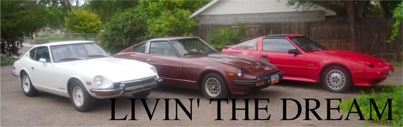

-
Ok well, I havent been on here and still no new MS news for the vg???WTF…really its a dead subject??? Well can anyone tell me one…will MS use my knock sensor? And the next uestion is there is a power transistor used for the stock ignition......do I need it anymore? I had it hooked up with my MSD but with MS and not isusinfg the facftory ecu I dunno -
Ms has its own transistors ,pin 24 hooks up to -coil.
As for knock sensor,maybe MS3. -
Matt89 wrote: Read this http://www.megamanual.com/index.html then post if you have any questions.
So, Cory, after you diseminate (sp?) the mega manual hook up w/ me and we'll do it together. The manual has a LOT of info.
It's great to be a HAWKEYE!
Link to my feedback viewtopic.php?f=18&t=21499&hilit=hawkeye -
Im wondering how the stock CAS was used with the megasquirt? Matt at DIYautotune said the firmware dosn't support the stock CAS triggering. Just bought a brand new Ms3w/Ms3x expantion. He said we would either have to run a trigger wheel or try out there new firmware they are experimenting on.........??89' Turbo-R.I.P. (scrapped)
87' NA all parts swapped from 89', Stance, 3.3 long block, hx35w, Injector Dynamics 1000cc, isky cams, pathfinder intake, front mount, megasquirt v3.57 w/MS3X
07 Frontier XE <----(turd) daily -
BLOZ UP.com
It is not recommended to confirm proper installation by driving into walls or other barriers as this could cause personal injury or damage to the vehicle. -
do you guys drill a reference hole for cyl 1 TDC that isn't a trailing or leading edge type slot like that which AEM seems to work better with rather than the progressively wider slots and the 180 degree marks, or do you guys have no idea what I'm talking about.
apparently a 1/8th reference mark drilled into the cas disc does a better job than the standard square slot? -
I never had a need to using batch injection.BLOZ UP.com
It is not recommended to confirm proper installation by driving into walls or other barriers as this could cause personal injury or damage to the vehicle. -
Yes, V3 firmware dosn't support it. I think thats ass backwards. I guess im going to be the pig and test out some new firmware stuff thats never been tested before for the vg30 lol. Not set in stone yet but i think thats were its going89' Turbo-R.I.P. (scrapped)
87' NA all parts swapped from 89', Stance, 3.3 long block, hx35w, Injector Dynamics 1000cc, isky cams, pathfinder intake, front mount, megasquirt v3.57 w/MS3X
07 Frontier XE <----(turd) daily -
Anyone mind hosting a base map for a bone stock 85 turbo 5 speed on MS2? Blozup had one however he took his awesome site down lol. Please host your write up again or your new one as it was extremely helpful!! -
what firmware do you have?Wastegate wrote: Anyone mind hosting a base map for a bone stock 85 turbo 5 speed on MS2? Blozup had one however he took his awesome site down lol. Please host your write up again or your new one as it was extremely helpful!!
Datsun 240z L28ET.
Datsun 1500 1971 VG30ET.
Datsun 280zx 5.3 vortec turbo. -
Can someone Re-post the wiring diagram for the dizzy? i can't read whats on page 389' Turbo-R.I.P. (scrapped)
87' NA all parts swapped from 89', Stance, 3.3 long block, hx35w, Injector Dynamics 1000cc, isky cams, pathfinder intake, front mount, megasquirt v3.57 w/MS3X
07 Frontier XE <----(turd) daily -
zoomed in, does this help?
-
Not really. If im reading it correctly it should say this i guess lol.
89' Turbo-R.I.P. (scrapped)
87' NA all parts swapped from 89', Stance, 3.3 long block, hx35w, Injector Dynamics 1000cc, isky cams, pathfinder intake, front mount, megasquirt v3.57 w/MS3X
07 Frontier XE <----(turd) daily -
60 degree signal, G/B - Green w/Black stripe, not G/O. It goes to pin 24, after being pulled up to 12v from 5v. That's the purpose of the resistor.
The G/W is the 360 degree signal, and is not currently used.
The other two are power and ground for the optical sensor itself.BLOZ UP.com
It is not recommended to confirm proper installation by driving into walls or other barriers as this could cause personal injury or damage to the vehicle. -
Why not go edis?

Copyright © 2006–. All rights reserved. Privacy Policy